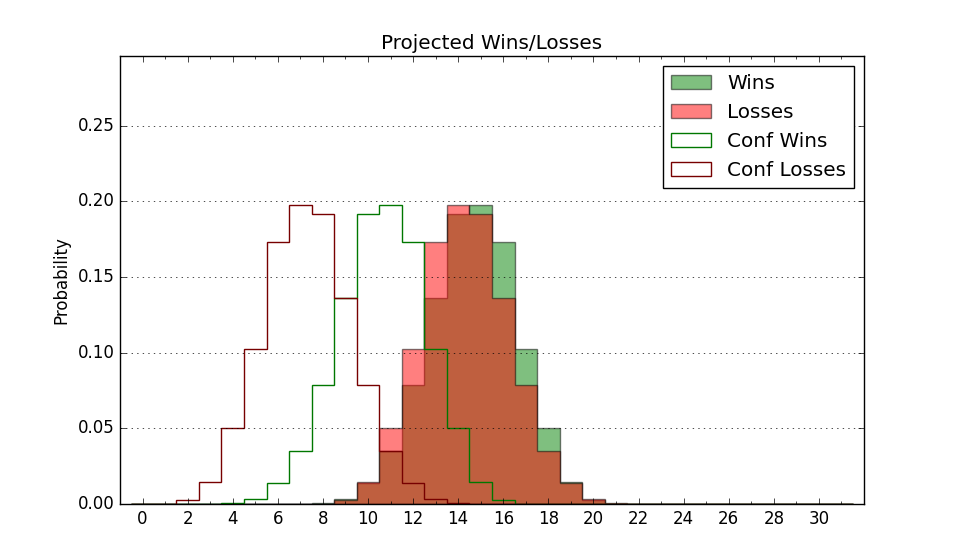

| Home | Game Probabilities | Conferences | Preseason Predictions | Odds Charts | NCAA Tournament |
| City: | Richmond, Kentucky | |
| Conference: | Atlantic Sun (4th)
| |
| Record: | 1-1 (Conf) 5-8 (Overall) | |
| Ratings: | Comp.: -3.2 (194th) Net: -1.7 (178th) Off: 107.9 (135th) Def: 109.6 (251st) SoR: 0.0 (170th) |
| Remaining | ||||||
|---|---|---|---|---|---|---|
| Date | Opponent | Win Prob | Pred. | |||
| 1/9 | North Florida (237) | 73.0% | W 90-83 | |||
| 1/11 | Jacksonville (193) | 64.7% | W 76-72 | |||
| 1/16 | @ Austin Peay (289) | 56.4% | W 71-69 | |||
| 1/18 | Bellarmine (350) | 90.7% | W 87-71 | |||
| 1/23 | Stetson (343) | 89.1% | W 86-71 | |||
| 1/25 | Florida Gulf Coast (152) | 55.9% | W 75-74 | |||
| 1/30 | @ Lipscomb (82) | 12.7% | L 67-81 | |||
| 2/1 | Austin Peay (289) | 81.5% | W 75-65 | |||
| 2/6 | @ Florida Gulf Coast (152) | 27.1% | L 71-78 | |||
| 2/8 | @ Stetson (343) | 70.5% | W 82-75 | |||
| 2/13 | West Georgia (344) | 89.1% | W 82-67 | |||
| 2/15 | Queens (249) | 74.2% | W 84-76 | |||
| 2/18 | Lipscomb (82) | 33.2% | L 72-77 | |||
| 2/20 | @ Bellarmine (350) | 74.2% | W 83-75 | |||
| 2/24 | @ Jacksonville (193) | 34.9% | L 72-76 | |||
| 2/26 | @ North Florida (237) | 44.2% | L 86-87 | |||
| Previous | Game Score | |||||
| Date | Opponent | Win Prob | Result | Off | Def | Net |
| 11/8 | @East Tennessee St. (146) | 25.7% | W 82-78 | 19.6 | 1.0 | 20.6 |
| 11/12 | @Clemson (37) | 5.1% | L 62-75 | -2.9 | 10.0 | 7.1 |
| 11/19 | @Chicago St. (356) | 80.8% | W 86-66 | 3.5 | 6.9 | 10.4 |
| 11/25 | (N) Ball St. (240) | 59.6% | L 61-63 | -16.0 | 10.3 | -5.7 |
| 11/26 | (N) Southern Illinois (258) | 63.0% | W 77-72 | 2.0 | 8.6 | 10.6 |
| 11/27 | (N) Louisiana Tech (138) | 37.6% | L 69-78 | 3.8 | -10.3 | -6.5 |
| 12/1 | @Troy (109) | 18.8% | L 74-84 | 8.8 | -7.3 | 1.5 |
| 12/11 | @Pittsburgh (16) | 2.8% | L 56-96 | -14.3 | -8.1 | -22.5 |
| 12/14 | Eastern Illinois (330) | 86.7% | W 81-66 | -6.1 | 9.9 | 3.9 |
| 12/21 | Jacksonville St. (161) | 57.7% | L 80-91 | 1.7 | -22.3 | -20.6 |
| 12/28 | @Louisville (35) | 4.8% | L 76-78 | 14.5 | 8.6 | 23.1 |
| 1/2 | @Central Arkansas (340) | 69.6% | W 89-83 | -3.1 | 4.1 | 1.1 |
| 1/4 | @North Alabama (158) | 28.1% | L 67-88 | -9.8 | -12.5 | -22.3 |
| Stats & Trends | |||||
|---|---|---|---|---|---|
| Current | Day | Week | Month | Season | |
| Composite | -3.2 | -0.2 | -1.7 | -2.5 | +7.0 |
| Comp Rank | 194 | -1 | -22 | -35 | +78 |
| Net Efficiency | -1.7 | -0.3 | -2.8 | -8.0 | -- |
| Net Rank | 178 | -5 | -28 | -68 | -- |
| Off Efficiency | 107.9 | +0.0 | -1.6 | -5.5 | -- |
| Off Rank | 135 | -- | -27 | -68 | -- |
| Def Efficiency | 109.6 | -0.3 | -1.2 | -2.5 | -- |
| Def Rank | 251 | -5 | -23 | -29 | -- |
| SoS Rank | 103 | -3 | -35 | -25 | -- |
| Exp. Wins | 14.7 | +0.0 | -0.6 | -1.1 | +2.8 |
| Exp. Conf Wins | 10.7 | +0.0 | -0.6 | -0.4 | +2.2 |
| Conf Champ Prob | 2.7 | -0.2 | -8.7 | -9.8 | -2.8 |

| Advanced Stats | ||
|---|---|---|
| Stat | Value | Rank |
| Off Eff FG % | 0.476 | 270 |
| Off Ast Ratio | 0.127 | 284 |
| Off ORB% | 0.326 | 80 |
| Off TO Rate | 0.121 | 21 |
| Off FT Ratio | 0.239 | 352 |
| Def Eff FG % | 0.529 | 253 |
| Def Ast Ratio | 0.148 | 193 |
| Def ORB% | 0.358 | 351 |
| Def TO Rate | 0.162 | 110 |
| Def FT Ratio | 0.348 | 217 |